La Facultad de Cultura Física tiene un compromiso claro: preparar profesionales de acuerdo con su misión, visión, objetivos y perfiles profesionales, adaptándose a las necesidades de la sociedad.
DIRECTOR DE CARRERA DE PEDAGOGÍA DE LA ACTIVIDAD FÍSICA Y DEPORTE
2026
MISIÓN
La Carrera en Pedagogía de la Actividad Física y Deporte tiene como propósito fundamental la formación de profesionales en el nivel de pregrado, con excelencia científica, académica y técnica; sobre la base de un compromiso ético acorde a las necesidades del desarrollo del País, específicamente en el área de incumbencia, promoviendo la transdisciplinaridad y multiculturalidad, mediante la investigación, la práctica pre profesional y / o pasantías.
VISIÓN
Al 2025 la Carrera en Pedagogía de la Actividad Física y Deporte, forma profesionales con excelencia en los campos de: la Educación Física, la Actividad Física, el Deporte y la Recreación, dotados de conocimientos sólidos que les permitan aportar en los diferentes ámbitos de trabajo, como también el emprender proyectos que contribuyan a mejorar la calidad de vida de la comunidad, aportando al desarrollo integral de las nuevas generaciones, promoviendo la masificación deportiva, con un alto sentido ético, conciencia social cultural y de género.
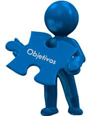
OBJETIVO
Formar profesionales de Pedagogía de la Actividad Física y Deporte con excelencia académica, basada en un amplio conocimiento de carácter científico-metodológico, humanista, capaces de liderar y accionar procesos formativos, educativos, de manera proactiva, que promuevan proyectos relacionados con la Educación Física Inicial, Básica, Bachillerato, la Actividad Física, Deporte y la Recreación, con un pensamiento crítico reflexivo, de acuerdo a la demanda social, cultural y económica respetando la equidad de género, interculturalidad y conservación del medio ambiente, que permita generar estilos de vida saludables, hábitos sociales y valores democráticos, garantizando el respeto a los derechos humanos en cumplimiento con el Plan Nacional del Buen Vivir.
La importancia que la educación física alcanzó el primer cuarto del siglo diecinueve, permitió que su difusión se amplíe a los centros educativos.
Perfil de egreso
¿Qué resultados o logros de los aprendizajes posibilitarán el desarrollo de las capacidades y actitudes de los futuros profesionales para consolidar sus valores referentes a la pertinencia, la bio-conciencia, la participación responsable, la honestidad, y otros?
Identifica métodos de acuerdo a las características, procesos evolutivos y necesidades de los sujetos que aprende, en relación con las metodologías y proceso de enseñanza-aprendizaje de la actividad física y deporte.
Diseña modelos de organización de procesos de enseñanza-aprendizaje en contextos educativos específicos, promoviendo la igualdad y diversidad en la educación, Inclusión e interculturalidad con énfasis en adaptaciones curriculares.
Diseña y aplica proyectos de intervención educativa comunitaria, fortaleciendo procesos metodológicos e inclusivos de actividades educativas.
Utiliza los fundamentos filosóficos, éticos y sociológicos en la dirección pedagógica de los procesos inherentes a la Educación Física Inicial, Básica, bachillerato, a la Actividad Física, Deporte y Recreación. Manifiesta Liderazgo y comunicación dialógica con estudiantes y comunidad donde se desempeñe.
Actúa con principios éticos profesional promulgando los valores y normas en la Educación Física, Actividad Física, Deporte y Recreación.
Comprende la legislación y procesos de organización de la Educación Física, la Actividad Física, Deporte y Recreación.
Resuelve posibles situaciones conflictivas de la profesión mediante una actitud asertiva y de trabajo interdisciplinario.
Respeta las reglas y normas de convivencia, de la Educación Física, la Actividad Física, Deporte, Recreación.
Demuestra adaptabilidad al cambio, ante situaciones del contexto físico, ambiental o competitivo.
Utiliza la comunicación, oral, escrita y digital con efectividad en sus actividades académicas.
Utiliza el trabajo cooperativo en la solución de problemas profesionales y el cumplimiento de los objetivos organizacionales, asumiendo actitudes y roles con empatía, respeto y promoción de la interculturalidad y la inclusión que demuestre el nivel de compromiso individual en función del colectivo donde se desempeñe.
Actúa con responsabilidad, creatividad y compromiso en la toma de decisiones en la búsqueda de solución a problemas profesionales.
Redacta ensayos, informes, misivas, resúmenes según la estilística técnica interpretando textos y manuscritos específicos mediante organizadores del pensamiento, enriquece su léxico, ensaya la expresión verbal meta textual, mediante exposiciones de simulación de la Educación Física, Actividad Física y Salud, Recreación.
Desarrolla creatividad en la búsqueda de alternativas para cumplir objetivos propuestos.
¿Qué resultados o logros de los aprendizajes relacionados con el dominio de teorías, sistemas conceptuales, métodos y lenguajes de integración del conocimiento, la profesión y la investigación desarrollará el futuro profesional?
Tomando como base lo propuesto en el currículum genérico de educación en referencia a:
“Integra en la relación Estado- Poder y organización social.
Suministro y uso adecuado de los recursos que garantizan los derechos fundamentales.
Relación ética con la ciencia y la tecnología.
Resolución alternativa de problemas.
Pensamiento sistémico y relacional para construir una visión de mundo.
Comunicación, lenguaje y conectividad para integrarse en las redes.
Definición y mantenimiento de planes estratégicos de actuación y gestión política, ecológica, económica y social.
Socialización del proyecto histórico y preservación de la cultura.
Identificación de su condición antropológica en la relación individuo-especie-sociedad, en el marco de la integración y la interculturalidad para la constitución de la auto regulación, auto organización y auto referencia, que constituye su subjetividad e identidad.”
Los requerimientos plasmados en el currículum genérico de educación con el perfil de egreso, los logros de aprendizaje del futuro profesional en relación al perfil ofertado serán: Los resultados o logros de los aprendizajes relacionados con el dominio de teorías, sistemas conceptuales, métodos y lenguajes de integración del conocimiento, la profesión y la investigación que desarrollará el futuro profesional de la Carrera de Pedagogía de la Actividad Física y deporte son:
Comprende el funcionamiento del ser humano y las manifestaciones básicas del movimiento involucrándose en los contextos y principios pedagógicos en el área de la Actividad Física, Deporte y su desarrollo en la sociedad.
Comprende el funcionamiento del ser humano y las manifestaciones básicas del movimiento involucrándose en los contextos y principios didácticos en el área de la Actividad Física, Deporte y su desarrollo en la sociedad.
Diseña y aplica modelos de procesos metodológicos de enseñanza- aprendizaje de la actividad física y deporte en la Educación Inicial mediante actividades lúdicas y la aplicación de las TIC como herramienta de apoyo para la enseñanza – aprendizaje.
Interrelaciona los procesos biológicos del ser humano con la práctica de la Educación Física, Actividad Física, Deporte y Recreación.
Organiza los procesos de enseñanza- aprendizaje de la Actividad Física, Deporte y Recreación en el contexto social.
Planifica procesos didácticos de la Educación Física, Actividad Física, Deporte y Recreación.
Identifica los procesos metodológicos y Psicológicos de la Educación Física, Actividad Física, Deporte y Recreación.
Diseña y aplica modelos teóricos metodológicos en la Educación Física, Actividad Física, Deporte y Recreación, contextualizados y adaptados a las necesidades de los sujetos.
Dirige organizaciones relacionadas con Educación Física, Actividad Física, Deporte y Recreación, mediante la planificación, organización, ejecución y control de las actividades asociadas a su objeto social y misión institucional.
Identifica y promueve actitudes de superación profesional sistemática en correspondencia con el contexto y las exigencias de los escenarios donde desarrolle la profesión.
Planifica, organiza y controla el tiempo y los recursos para cumplir con eficiencia los objetivos profesionales previstos.
Analiza el estado de necesidades, motivaciones, fortalezas y debilidades para la práctica de Educación Física, Actividad Física, Deporte y Recreación, en contextos comunitarios e institucionales y oferta un producto pedagógico profesional para satisfacer dicha demanda.
Promueve con el ejemplo personal en la práctica sistemática de la Educación Física, Actividad Física, Deporte y Recreación, para el mejoramiento de la salud y la calidad de vida.
Ejecuta los elementos técnico – tácticos y desarrolla la metodología de la enseñanza de varios deportes, fundamentalmente los que aparecen en la malla curricular.
Elabora planes y desarrolla el proceso pedagógico de la práctica de la Educación Física, Actividad Física, Deporte y Recreación.
Organiza y desarrolla programas de gestión de la Educación Física, Actividad Física, Deporte y Recreación.
Planifica, Organiza, ejecuta y evalúa programas físicos recreativos y de animación turística en diversos medios naturales, instituciones públicas y privadas con una visión ecológica y de desarrollo sostenible.
Redacta ensayos, informes, misivas, resúmenes según la estilística técnica interpretando textos y manuscritos específicos mediante organizadores del pensamiento, enriquece su léxico, ensaya la expresión verbal meta – textual, mediante exposiciones de simulación de la Educación Física, Actividad Física, Deporte y Recreación.
Creatividad en la búsqueda de alternativas para cumplir objetivos propuestos.
Mediante estos logros de aprendizaje se logrará cimentar el pensamiento crítico- creativo, que permita la integración disciplinar permitan la autonomía, la identidad y el respeto a la diversidad cultural, étnica y de género en relación con los aspectos cognoscitivos, funcionales e interacciónales.
Carrera · Pregrado
Entrenamiento Deportivo
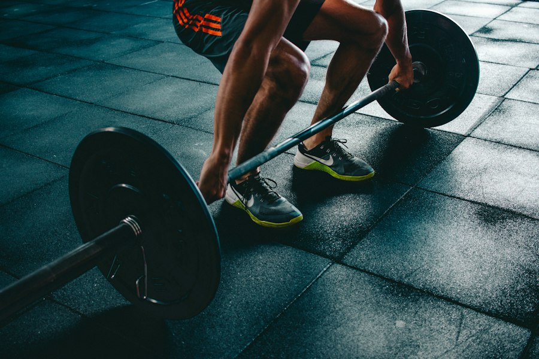
Autoridades
DR. NELSO OTAÑEZ
DIRECTOR DE CARRERA DE ACTIVIDAD FÍSICA
2023
Posgrado
Maestría en Actividad Física
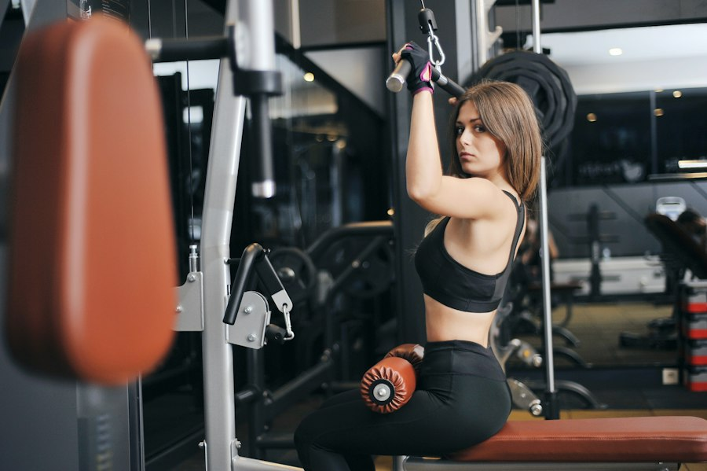
OBJETIVO
Formar profesionales de cuarto nivel con alto nivel de responsabilidad, identificados con las políticas y estrategias nacionales, regionales y locales con competencias profesionales enriquecidas con una formación disciplinar avanzada en el área de la actividad física que le permitirá solucionar problemas de la praxis e influir positivamente en la condición física de las personas.
Requisitos de Inscripción
Solicitud al Director de Posgrado de la Facultad, solicitando su inscripción (Dr. Oswaldo Vásconez Rubio PhD).
Copia notariada del título de tercer nivel en carreras afines a la maestría.
Impreso del registro del título obtenido en la página web de SENESCYT (color).
Dos fotocopias a color de la cédula de identidad y certificado de votación o pasaporte si es extranjero, (notariados).
Tres fotografías tamaño carnet a color y actualizadas.
Hoja de vida actualizada.
MÓDULOS
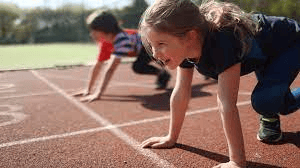
Fisiología y valoración funcional en la actividad física
Bioquímica y nutrición para el ejercicio físico
Prescripción del ejercicio y entrenamiento personal
Planificación de la preparación física
Metodología de la investigación científica aplicada a la actividad física y deportes
Bioestadística
Tiempo libre y recreación
Actividad física y deportes en niños y adolescentes
Actividad física y deportes en grupos vulnerables
Taller de titulación
ESPECIFICACIONES DEL PROGRAMA
TIPO DE PROGRAMA:
Maestría profesional
MODALIDAD DE ESTUDIOS:
Presencial (hibrida)
DEDICACIÓN:
Tiempo completo
DURACIÓN:
Dos semestres
PERÍODO ACADÉMICO:
2023
Posgrado
Maestría en Entrenamiento Deportivo
Para la selección de estudiantes de la Promoción 2022 – 2023 del Programa de Posgrado:
La Universidad Central del Ecuador, la Facultad de Cultura Física y el Instituto de Posgrado convocan a aspirantes ecuatorianos/as y extranjeros/as
REQUISITOS DE INSCRIPCIÓN
Solicitud al Director de Posgrado de la Facultad, solicitando su inscripción.
Copia notariada del título de tercer nivel en carreras afines a la maestría como: Médicos, Psicólogos Clínicos, Licenciados en Nutrición, Licenciados en Fisioterapia, Licenciados en Entrenamiento Deportivo, Licenciados en Ciencias de la Actividad Física, Deportes y Recreación, Licenciado en Docencia en Cultura Física, Licenciado en Ciencias de la Educación, especialidad Educación Física o carreras afines a la maestría
Impreso del registro del título obtenido en la página web de SENESCYT (color).
Dos fotocopias a color de la cédula de identidad y certificado de votación o pasaporte si es extranjero, (notariados).
Certificado de inglés aprobado nivel A 1 (de acuerdo con el Marco Común Europeo) y otorgado por las universidades, Politécnicas o institutos superiores acreditados (si tiene más de cinco años de vigencia debe ser convalidado por el Centro de Idiomas de la Universidad Central del Ecuador)
Tres fotografías tamaño carné a color y actualizadas.
Hoja de vida actualizada.
Graduados
Seguimiento a Graduados
Es un placer saludarles en nombre de las autoridades de nuestra Facultad.
Nos dirigimos a ustedes con el propósito de solicitar su colaboración en el proceso de Seguimiento a Graduados de nuestra carrera. Les pedimos que por favor respondan los cuestionarios correspondientes al Seguimiento a Graduados de la Facultad. Valoramos enormemente la información que puedan proporcionar, ya que es de vital importancia para nosotros.
Contamos con su apoyo y agradecemos de antemano su participación en este proceso.
Encuesta institucional de Seguimiento a Graduados
Instrumento propio de la Facultad, elaborado a partir de los ejes de Gestión Institucional, Academia, Vinculación con la Sociedad e Investigación. Tus respuestas se registran directamente en la base de datos del Seguimiento a Graduados.
Graduados · Instrumento de Seguimiento
Encuesta de Seguimiento a Graduados
Instrumento elaborado por la Facultad de Cultura Física para las carreras de Pedagogía de la Actividad Física y Deporte y Entrenamiento Deportivo. Tus respuestas alimentan la base de datos institucional de Seguimiento a Graduados y son confidenciales para fines de mejora académica.
Esta encuesta está organizada en cinco secciones: Datos generales, Gestión Institucional, Academia, Vinculación con la Sociedad e Investigación. Tómate unos minutos para responder con la mayor sinceridad posible; no hay respuestas correctas o incorrectas.
Cargando número de respuestas registradas…
Resultados
Estadísticos de «Grado»
Estadísticas Generales OUDE
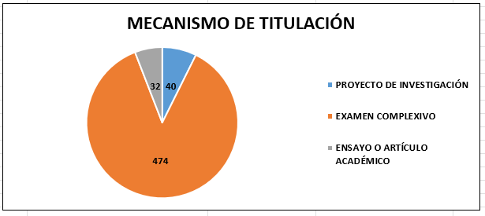
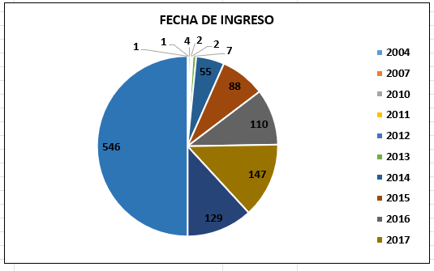
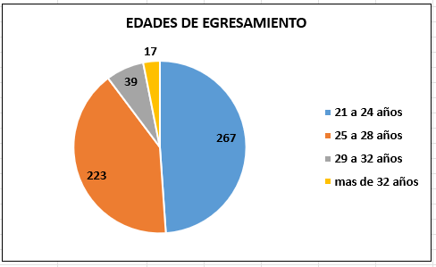
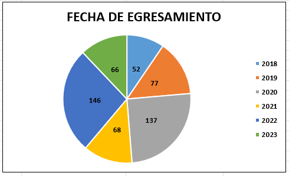
ESTADÍSTICAS AÑO 2018
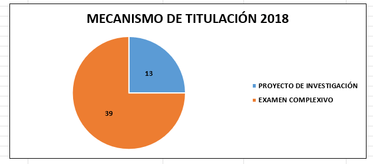
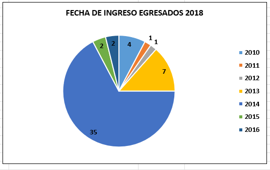
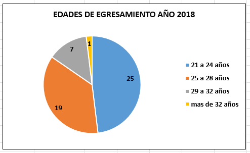
ESTADÍSTICAS AÑO 2019
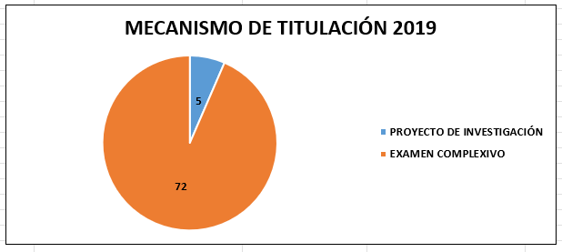
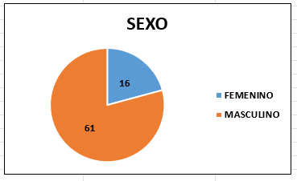
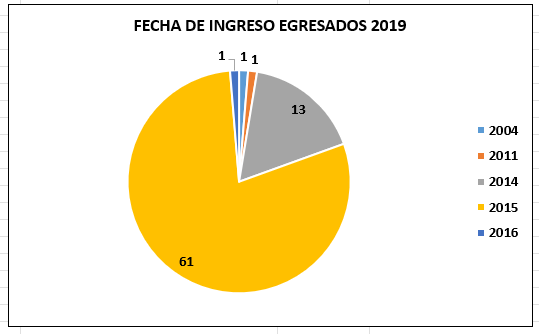
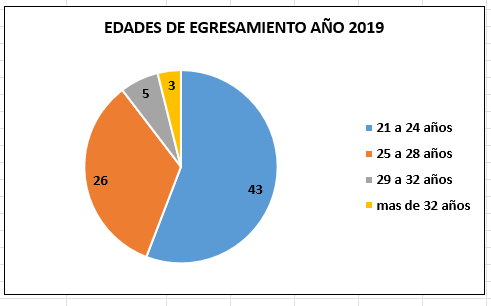
ESTADÍSTICAS AÑO 2020
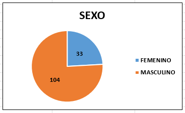
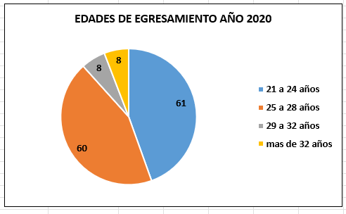
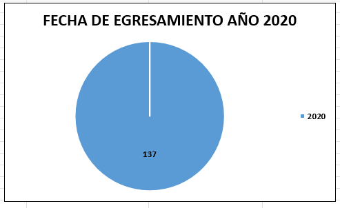
ESTADÍSTICAS AÑO 2021
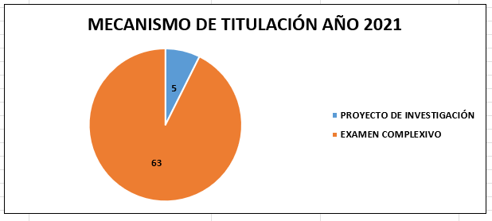
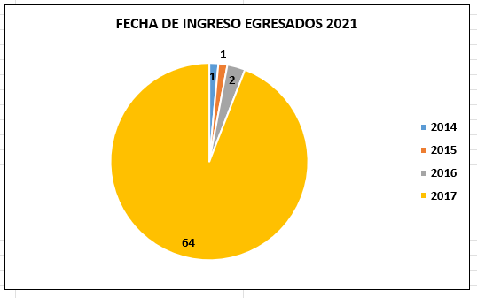
ESTADÍSTICAS AÑO 2022
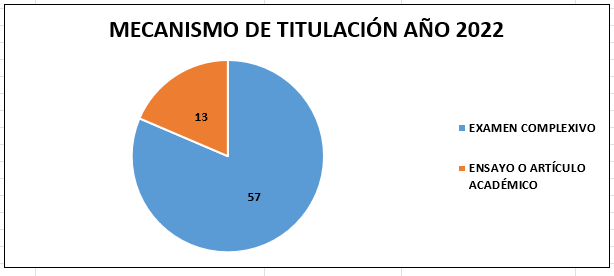
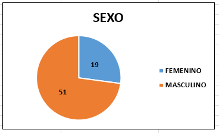
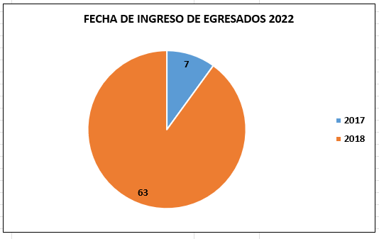
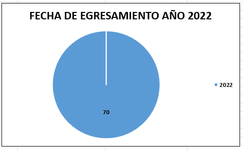
ESTADÍSTICAS AÑO 2023
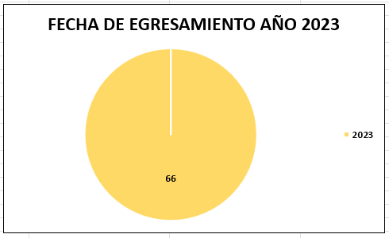
Estadísticas de encuesta aplicada por la facultad
Resultados
Estadísticos de «Posgrado»
Estadísticas Generales
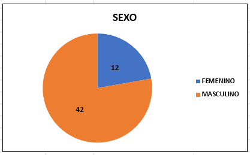
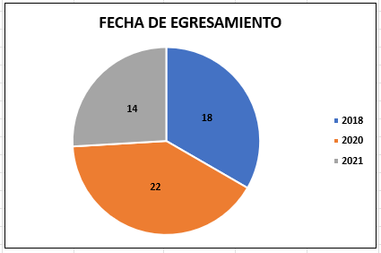
Bolsa de Empleo
¿Qué es la bolsa de empleos?
La bolsa de empleos es una herramienta diseñada para vincular a los graduados de la Facultad de Cultura Física en la búsqueda de oportunidades laborales, con una amplia gama de empresas tanto del sector público como privado. Este recurso no solo facilita la identificación de distintas ofertas laborales, sino que también sirve como un medio efectivo para las empresas que buscan reclutar talento profesional. Con este enfoque, se busca mejorar significativamente los niveles de empleo y la inserción laboral dentro de nuestra comunidad académica.


 Av. Mariscal Sucre y Jorge Ávila; Av. América y Av. Bolivia, Quito, Ecuador
Av. Mariscal Sucre y Jorge Ávila; Av. América y Av. Bolivia, Quito, Ecuador
 (02) 252-1827
(02) 252-1827